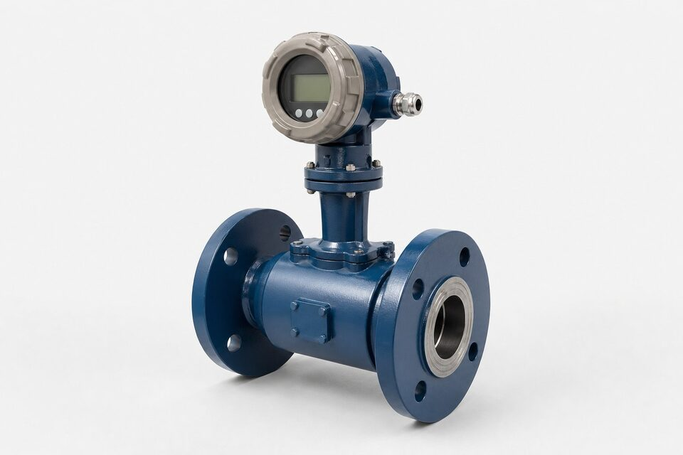

پدیده گردابه و اندازهگیری
وقتی سیالی با سرعت کافی از کنار یک بدنه ثابت عبور میکند، در پشت آن گردابههایی به صورت متناوب تشکیل و جدا میشوند؛ فرکانش این گردابهها با سرعت جریان رابطه مستقیم دارد. در فلومتر گردابی، یک سنسور فشار یا خازنی این نوسانات را تشخیص داده و الکترونیک، فرکانس را به دبی حجمی تبدیل میکند. زیبایی این روش در سادگی آن است: هیچ بخش متحرکی وجود ندارد، هیچ نیازی به جابجایی مکانیکی نیست و تنها فرکانس خوانده میشود؛ همین ویژگی، دوام و پایداری آن را در سرویسهای سخت تضمین میکند.

مزایا؛ چرا برای بخار مناسب است؟
بخار یکی از دشوارترین سیالها برای اندازهگیری است: دمای بالا، تغییر چگالی با فشار و نبود گزینههای زیاد. فلومتر گردابی هر سه چالش را به خوبی مدیریت میکند: بدون بخش متحرک در دمای بالا کار میکند، با اندازهگیری سرعت (و در طرحهای چندمتغیره با جبران چگالی)، دبی جرمی قابل اتکا ارائه میدهد و افت فشار آن نیز کمتر از روشهای محدودکننده است. در گازهای تمیز و مایعات کمویسکوز نیز عملکرد پایداری دارد؛ به همین دلیل در بسیاری پروژهها جایگزین روشهای قدیمیتر شده است.
محدودیتها
سه محدودیت اصلی باید در انتخاب دیده شود. اول، حداقل دبی: در سرعتهای پایین، گردابهها ضعیف شده و سنسور نمیتواند آنها را با اطمیناز از نویز تفکیک کند؛ بنابراین رنجپذیری این فناوری محدودتر از برخی روشهاست. دوم، حساسیت به ارتعاش مکانیکی؛ نصب نزدیک پمپها یا خطوط پرارتعاش بدون تمهید، خوانش را خطا میاندازد. سوم، نیاز به پروفایل جریان مناسب؛ زانو، شیر و آشفتگیهای بالادست، الگوی گردابه را مختل میکنند و طول مستقیم کافی باید رعایت شود.
معیارهای استعلام
در استعلام فلومتر گردابی، سیال و حالت آن (بخار اشباع یا فوقگرم، گاز یا مایع)، رنج دبی با ذکر حداقل و بیشینه، دما و فشار کاری، سایز خط و وضعیت ارتعاش را ذکر کنید. اگر اندازهگیری جرمی بخار لازم است، طرح چندمتغیره با جبران دما و فشار بررسی شود. جنس بدنه متناسب سیال و الزامات ناحیه خطر نیز از پارامترهای ضروری است. مدارک کالیبراسیون کارخانهای همراه تجهیز تحویل میشود و در نقاط حساس، تست دورهای در برنامه نگهداری لحاظ گردد.
نصب، پیکربندی و عیبیابی فلومتر گردابی
فلومترهای گردابی در سرویسهای بخار و گاز تمیز عملکرد بسیار خوبی دارند، به شرطی که نصب و پیکربندی آنها متناسب شرایط واقعی انجام شود. در نصب، مقطع مستقیم کافی در بالادست و پاییندست اهمیت دارد؛ منابع اغتشاش مانند زانوییها، شیرهای کنترل و تغییر قطر، الگوی گردابهها را نامنظم و قرائت را ناپایدار میکنند. فاصله پیشنهادی سازنده باید رعایت شود و اگر فضای کافی در دسترس نیست، استفاده از جریانصافکن میتواند فاصله مورد نیاز را کوتاه کند. در نصب سنسور، جهت فلش بدنه باید با جهت جریان همخوانی داشته باشد و محل نصب باید از منابع ارتعاش مکانیکی شدید دور باشد، چون ارتعاش خط لوله میتواند توسط سنسور به اشتباه به عنوان سیگنال جریان تفسیر شود. در سرویس بخار، یک نکته مهم وجود دارد: هنگام خاموشی خط و سرد شدن، میعان داخل لوله میتواند سنسور را فرا بگیرد؛ بنابراین در خطوطی که دورههای خاموشی طولانی دارند، وضعیت سنسور در راهاندازی مجدد باید کنترل شود و در صورت نیاز تمیزکاری گردد. در پیکربندی، پارامترهای اصلی شامل ابعاد لوله، شرایط سیال و فیلترهای سیگنال است؛ تنظیم درست فیلتر، نویزهای مکانیکی را حذف بدون آنکه سیگنال واقعی جریان را تضعیف کند. اگر ترکیب یا شرایط سیال نسبت به زمان سفارش تغییر کرده است، ضریب دستگاه باید بازنگری شود. در عیبیابی، چند علامت رایج وجود دارد: اگر قرائت در زمان بیکاری خط صفر نمیشود، ارتعاش خط یا نویز الکتریکی را بررسی کنید؛ اگر قرائت از مقدار واقعی کمتر است، رسوب روی بدنه ایجادگر گردابه یا تغییر شرایط سیال محتمل است؛ و اگر سیگنال ناپایدار است، وجود فاز دوم مانند قطرات میعان در گاز یا اغتشاش شدید جریان باید بررسی گردد. در نهایت، کالیبراسیون دورهای را در برنامه نگهداری واحد قرار دهید و نتایج را برای پایش روند سلامت دستگاه ثبت کنید.
جمعبندی
فلومتر گردابی انتخاب طبیعی بخار و گازهای تمیز است: بدون بخش متحرک، مقاوم در دمای بالا و با نگهداری اندک. با رعایت حداقل دبی، طول مستقیم و دوری از ارتعاش، این فناوری سالها اندازهگیری پایدار ارائه میدهد و در بسیاری پروژهها، اقتصادیترین راهحل قابل اتکا برای دبی فرایندی است.
سوالات رایج
فلومتر گردابی چگونه کار میکند؟
یک بدنه ثابت در مسیر جریان، گردابههایی متناوب ایجاد میکند؛ فرکانش تشکیل این گردابهها با سرعت سیال رابطه مستقیم دارد. سنسور این فرکانس را خوانده و الکترونیک آن را به دبی تبدیل میکند.
چرا انتخاب اول بخار است؟
چون بدون بخش متحرک است، دماهای بالای بخار را تحمل میکند و به تغییرات چگالی کمتر از روشهای حجمی حساس است؛ به علاوه افت فشار آن نیز در حد معقولی است.
محدودیت اصلی آن چیست؟
به حداقل سرعت جریان نیاز دارد؛ در دبیهای خیلی پایین، گردابهها ضعیف شده و اندازهگیری نامطمئن میشود. همچنین به ارتعاش مکانیکی و جریان متلاطم حساس است.
چه پیشنیازی برای نصب لازم است؟
طول مستقیم کافی در بالادست و پاییندست برای شکلگیری پروفایل جریان و دوری از منابع ارتعاش؛ بدون این شرایط، خوانش نویزی و خطادار میشود.
مطالب مرتبط
با ذکر سیال، رنج دبی، دما و سایز خط، فلومتر گردابی متناسب از برندهای معتبر عرضه میشود.
مشاهده صفحه محصول ← ثبت RFQ همین محصولتامین این تجهیزات را به پیشرو تجهیز فرتاک بسپارید
شرکت پیشرو تجهیز فرتاک تامینکننده تخصصی تجهیزات صنعتی برای پروژههای نفت، گاز، پتروشیمی، فولاد و نیروگاهی است. برای دریافت پیشنهاد فنی و قیمت، استعلام (RFQ) خود را ثبت کنید تا کارشناسان مهندسی فروش در کوتاهترین زمان پاسخ دهند.
- تامین ابزار دقیقترانسمیترها و آنالایزرهای برندهای معتبر
- تامین تجهیزات صنایع نفت و گازپکیج مواد مطابق وندورلیست